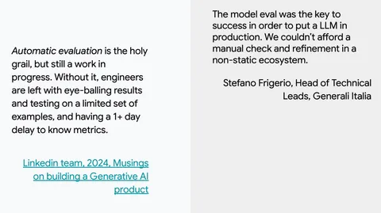

На повестке — туториал Evaluating Large Language Models — Principles, Approaches, and Applications. Он был посвящён оценке больших языковых моделей (LLMs). Руководитель группы аналитики в Яндексе Анастасия Беззубцева посетила туториал и рассказала, что интересного отметила для себя.
Первую часть представляла продакт-менеджер Google Ирина Сиглер. Она ввела общие понятия и объяснила базовые моменты. Например, о важности валидации на датасете, который репрезентативен реальной бизнес-задаче. Есть три способа собрать валидационное множество заданий для оценки модели:
— Manual — написание промптов вручную;
— Synthetic — генерация промптов с помощью LLM;
— Traffic — использовать продуктовый поток.
По словам Сиглер, важно оценивать систему полностью, а не только LLM под капотом. Сама модель — это всего лишь один кирпичик в общей структуре.
Со второй частью выступала исследовательница и член консультативного совета Центра инноваций в области искусственного интеллекта (CAII) в университете Иллинойса Бо Ли. Она выделила три метода оценки:
— Computation — расчёт схожести между данным ответом и референсным;
— Human — оценка человеком;
— LLM-as-Judge или AutoRater — оценка с помощью модели.
Ли Бо рассказала, что автоматические методы оценки не слишком хорошо коррелируют с человеческими суждениями. Модели могут ошибаться, отдавая предпочтение, например, собственным или самым длинным ответам. Однако использование LLM для оценки становится всё более частым явлением — главное, чтобы полученные результаты валидировали люди. Чтобы нивелировать недостатки способа, на туториале предлагали переставлять опции и искать консенсус между несколькими ответами одной модели или ответами разных.
Этим туториал не ограничился — были еще практическая часть и часть, посвященная соответствию этическим нормам. С презентацией туториала вы можете ознакомиться по этой ссылке.
#YaNeurIPS
Душный NLP
